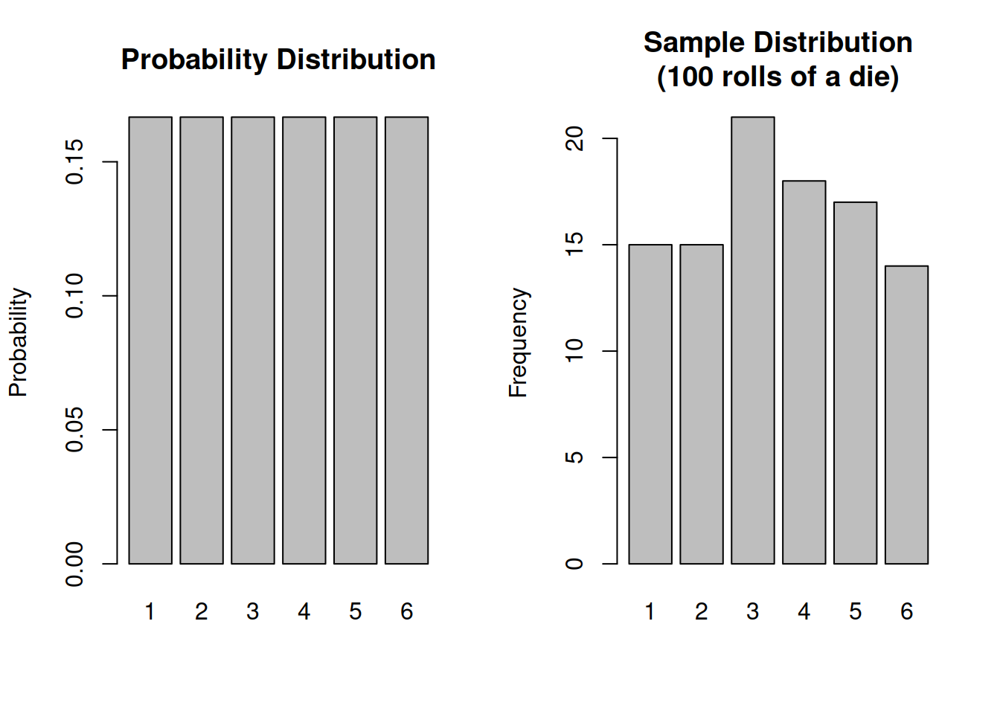
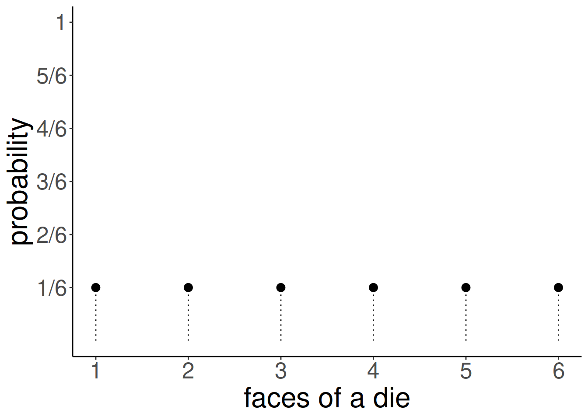
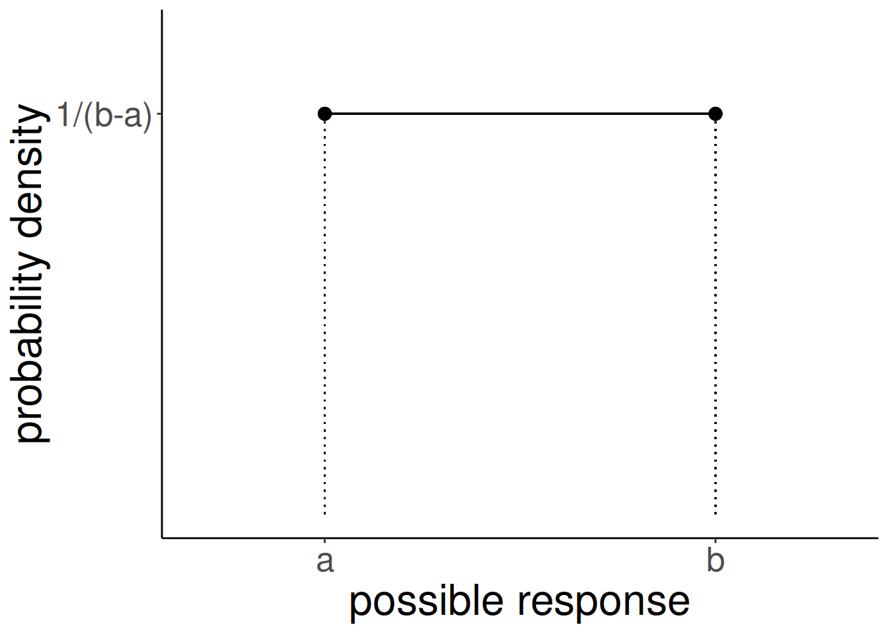
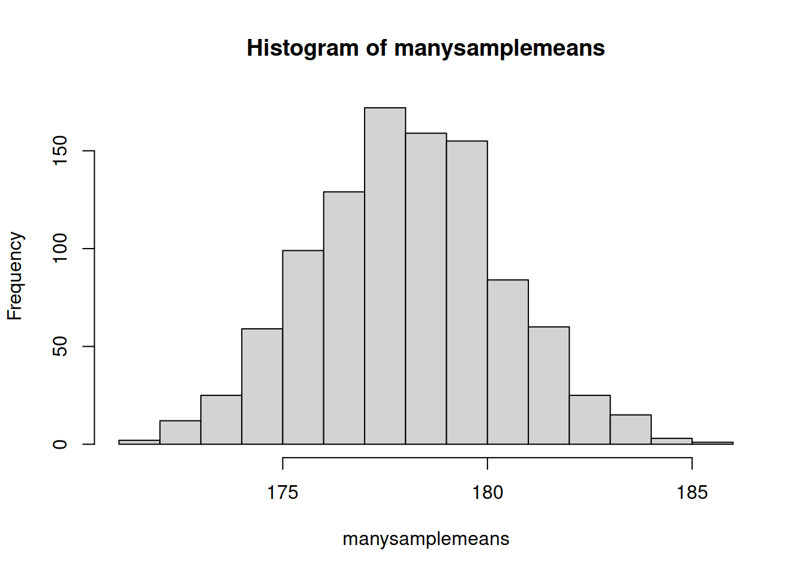
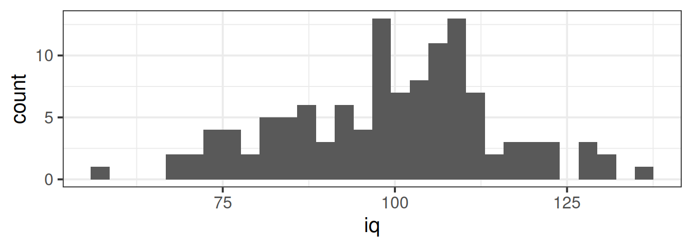
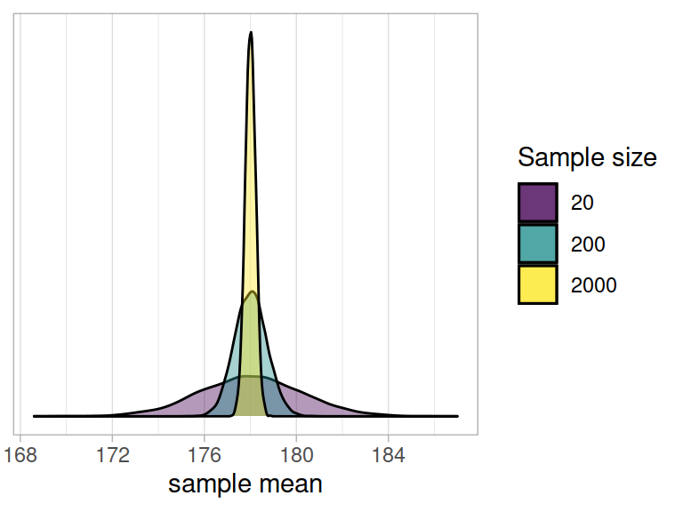
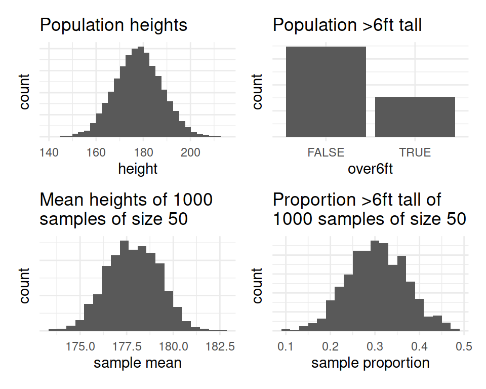

Curves & Sampling
Probability distributions
We’ve seen some ways of describing and visualising the distributions of variables that we might observe when we collect data. Such a collection of observations on a single variable is often termed a “sample distribution”.
Another type of distribution that will prove to be very useful is a “probability distribution”.
A probability distribution is the (mathematical) description of the probabilities of occurrences of observing the different possible outcomes.
Note an important jump we are making is that we are moving from talking about distributions that we observe, to something more conceptual. Typically, this is because we want to talk more generally about the underlying process which generates the data.
For example, the function that governs the behaviour of rolling a single die is uniform in that each possible response has an equal probability (\(\frac{1}{6}\)) of being observed (below left). When we collect data by actually rolling a die 100 times, we will observe a sample distribution (below right).
Uniformity
When an equal probability is assigned to each possible response, we have what is known as the uniform distribution.
For a fair 6-sided die, the probability of the die landing on each side is 1/6, and the probabilities of all the possible responses sum to 1 (because it has to land on one of the sides).

The dice-rolling example is one involving a categorical distribution - i.e. data which has a discrete set of response options. We don’t have to use a 6-sided die - if it follows a uniform probability distribution, and there are \(n\) possible responses, then the probability of each response ocurring is \(1/n\).
However, the uniform probability distribution can be relevant for a continuous numeric variable as well (e.g. something which as well as taking the values 4 and 5 can also take 4.1, 4.11, 4.1111111111, 4.764968473 etc.. - they can take any real value). We can preserve the idea that probability sums to 1 for this sort of variable by having the probability as \(\frac{1}{b-a}\), where \(a\) and \(b\) are the lower and upper bounds of the response domain. Why? Because this makes the area of the distribution equal to 1 (area of a rectangle = width \(\times\) height. \((b-a) \times \frac{1}{(b-a)} = \frac{b-a}{b-a} = 1)\). This means we can compute areas of parts of the distribution in order to calculate probabilities!

Normal distributions
why normal?
sampling is random
deviations around a mean
rnorm() pnorm()
There are certain properties of normal distributions which we can exploit, in order to determine how plausible an observed value is relative to a distribution. When a distribution is normal (symmetric and bell-shaped):
- 68% of values will lie within 1 standard deviation of the mean.
- 95% of values will lie within 1.96 standard deviations of the mean.
- 99.7% of values will lie within 3 standard deviations of the mean.

Sampling Distributions
Often, what we’re really interested does not concern a specific individual but the wider population in general. For example, TODO
In practice, when we do research we tend to collect data from a sample, because it is not feasible to collect data from the entire population. By using a random sample to represent a population of interest, we introduce uncertainty (due to sampling variability) in how accurate our sample statistic is as an estimate of the population parameter.
For example, TODO -MATCH ABOVE TODO
Let’s look at this with a little example.
Let’s pretend that the average height of the entire global adult population is exactly 178cm, and that the standard deviation of heights is 10cm. However, let’s also pretend that we do not know that the average height is 178cm, and that we are interested in trying to estimate the average height. Unfortunately, all we have is the measurements of 20 people who we randomly sampled. We want to use the mean height of our sample as an estimate of the mean height of the population.
In R, we can simulate the act of randomly sampling 20 people’s heights from the population with \(\mu = 178\) and \(\sigma = 10\) using rnorm():
our_sample <- rnorm(n = 20, mean = 178, sd = 10)
mean(our_sample)[1] 176.7317Note that the mean of our sample (176.73) is not quite the same as the mean of the population (178 exactly). As we know, samples vary. If we do the same thing again, R will take a different sample of 20, and so the mean of this new sample will also be different:
mean(rnorm(n = 20, mean = 178, sd = 10))[1] 181.0967Each time we get a new sample, we get a different mean:
mean(rnorm(n = 20, mean = 178, sd = 10))
mean(rnorm(n = 20, mean = 178, sd = 10))
mean(rnorm(n = 20, mean = 178, sd = 10))[1] 179.3159[1] 178.1062[1] 175.7159What we’re wanting to do here is think about all possible samples of 20 people we could take, and all the possible resulting mean heights. Let’s suppose we took 1000 samples of 20 people, and for each one we calculated the mean height. Where would all these different means fall? Some would be above our population parameter (i.e. we just might happened to have sampled some slightly taller people) and some would be below.
We can use R to enact this repeated sampling: the replicate() function allows us to repeatedly execute a bit of code, which means we can take lots of samples and calculate their means. These means we can then visualise using hist():
manysamplemeans <- replicate(1000, mean(rnorm(n = 20, mean = 178, sd = 10)))
hist(manysamplemeans)
Note what happens to the distribution when we take 1000 means of samples of size \(n=200\), rather than \(n=20\). Many more of the of the values are in a much narrower bracket (pay careful attention to the x-axis) than when we took lots of samples of \(n=20\).
manysamplemeans200 <- replicate(1000, mean(rnorm(n = 200, mean = 178, sd = 10)))
hist(manysamplemeans200)
Why is this important?
What we’re doing here is showing the process of taking many samples of the same size from a population and calculating a statistic on each sample. The distribution of these sample statistics shows how the statistic will vary from sample to sample due to chance. Provided that our sampling is truly random, the sample statistics will be centered around the population parameter.
In the above example, for samples of \(n=20\) drawn from a population with mean \(\mu=178\) and standard deviation \(\sigma=10\), the sample means are centered around 178, and we’re quite likely to get sample means between 174 and 182, but less likely to see sample means \(<174\) and \(>182\). Importantly, we can quantify this. The distribution of means from samples of size \(n=20\) has a standard deviation of:
sd(manysamplemeans)[1] 2.30394This metric, the standard deviation of the sampling distribution of a statistic, is known as the standard error.
Sampling Distribution and Standard Error
- The theoretical distribution of how sample statistics will vary on repeated sampling is known as the sampling distribution.
- The standard deviation of the sampling distribution is known as the standard error.
- Note that the bigger our sample size, the smaller our standard error - i.e., the more precise our sample means are going to be as estimates of the population mean:

Standard Error in practice
In practice, we cannot actually take lots and lots of samples in order to construct a sampling distribution, and nor do we know the population parameters which are required to generate samples like we did above (we do not know the population mean \(\mu\) or standard deviation \(\sigma\))
Instead, we start with just one observed sample, e.g.:
observed_sample <- c(176.86, 169.45, 177.93, 175.89, 169.05, 162.56, 189.29, 196.15, 159.45, 165.69, 186.88, 176.9, 188.52, 164.05, 175.62, 180.89, 193.63, 161.59, 182.74, 184.23)What we can do is either:
A: Simulate lots of sampling via bootstrapping.
This uses resampling with replacement1 from our original sample as a means of imitating repeated sampling. Note thereplace = FALSE:# bootstrap means of resamples with replacement of the same size (20) as observed sample bootstrap_means <- replicate(1000, mean(sample(observed_sample, size = 20, replace = TRUE))) # SE = sd of bootstrap resample means sd(bootstrap_means)[1] 2.437693or B: Estimate the standard error using a formula:
\[ SE = \frac{\sigma}{\sqrt{n}} \\ \quad \\ \begin{align} & \text{Where} \\ & \sigma = \text{standard deviation} \\ & n = \text{sample size} \\ \end{align} \] Note that \(\sigma\) is the standard deviation of the population, which is unknown to us. However, we can use the standard deviation of our sample (\(\hat \sigma\) or \(s\)) as our estimate of this:# SE = standard deviation / square root of n sd(observed_sample)/sqrt(length(observed_sample))[1] 2.459404
Confidence Intervals
TODO
CLT
Notice that the sampling distributions we have generated above all have similar properties - they are symmetric and bell-shaped. They are normally distributed.
In fact, the central limit theorem (CLT) states that when we take sufficiently large random samples from a population, the distribution of the sample means will be approximately normally distributed. This holds regardless of whether the population is normal (or skewed).

Footnotes
Imagine a bag full of coloured marbles. If we sample with replacement, then we take a marble out, record its colour, and put it back. Then we take a marble out, record its colour, and put it back. And so on. This means we might get the same marble more than once.↩︎